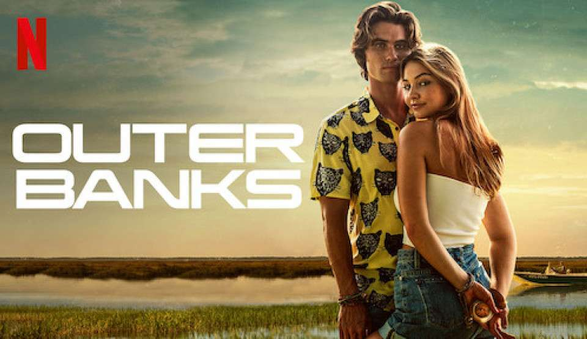
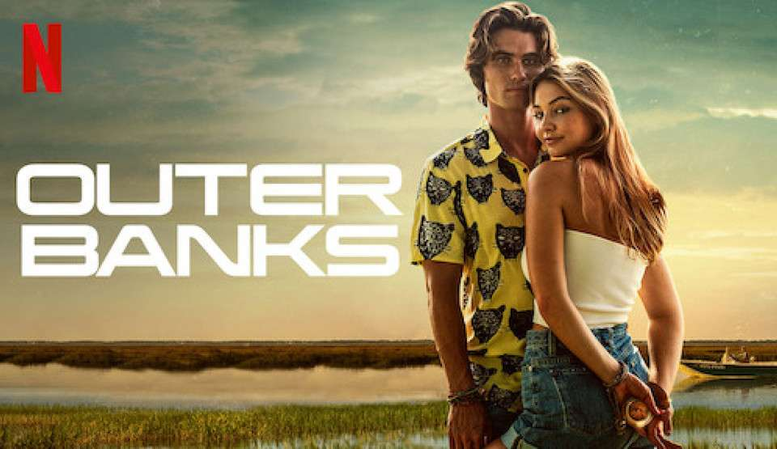

O quarto ano de Stranger Things se passa seis meses depois da batalha no Shopping Starcourt, em que as crianças de Hawkins derrotaram o Devorador de Mentes em sua forma gigante e grotesca. Após o cenário de terror e destruição causado pelo confronto, o grupo de amigos se separa pela primeira vez e cada um terá de lidar com as dificuldades e desafios do ensino médio de forma mais solitária.
Assistir Mais InformaçôesUma nova ameaça do Mundo Invertido surge para romper a linha tênue que separa a realidade humana da dimensão sombria habitada pelos Demogorgons. Para isso, o antagonista Vecna (Jamie Campbell Bower, da saga Crepúsculo) deve assassinar quatro crianças e adolescentes de Hawkins, abrindo o portal que dá acesso às criaturas do universo paralelo à cidade onde moram os protagonistas.
Gênero: Ficção científica · Terror · Suspense · Drama adolescente
Ano de Lançamento 2022


 
